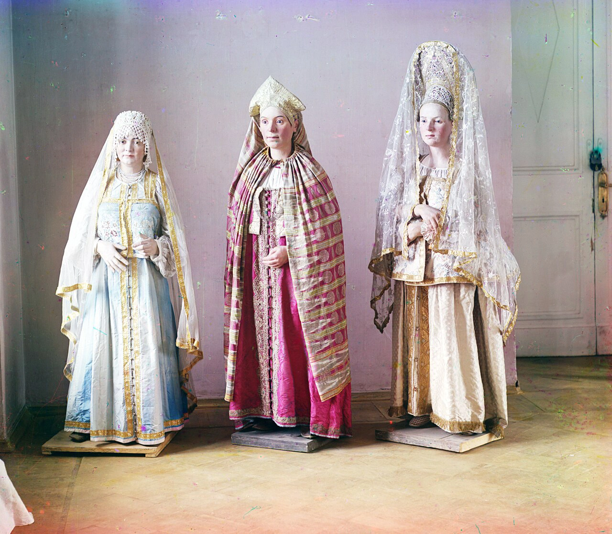
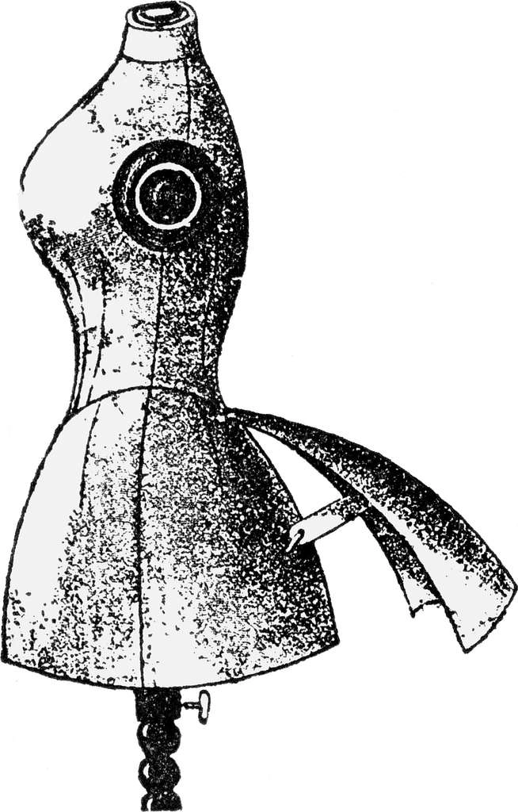
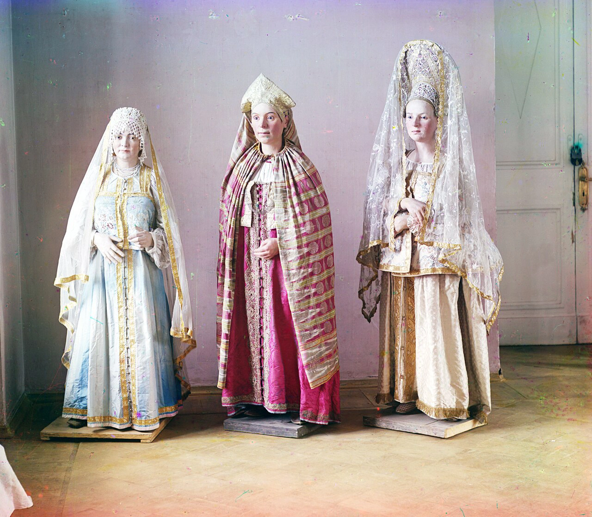
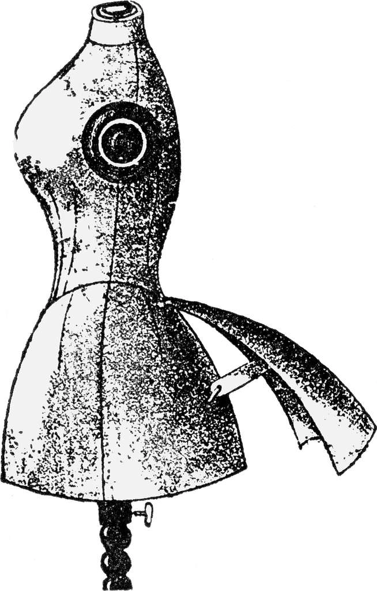
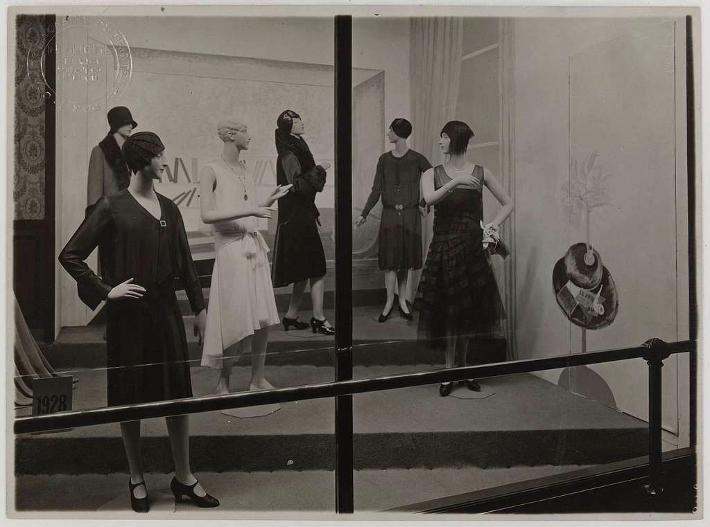
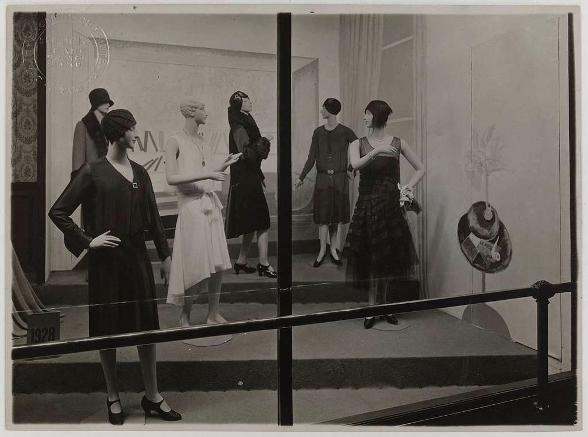

20 Iconic Fashion Patterns: The Visual DNA of High Fashion
Patterns serve as the visual "rhythm" of the fashion world, acting as a sub-textual language that viewers decode instantly. Whether they communicate authority, heritage, rebellion, or quiet luxury, these 20 iconic fashion patterns form the very DNA of high-fashion storytelling in 2026 and beyond.
Below are the top 20 timeless and famous fashion prints, categorized by their psychological and stylistic impact — now with visual close-up examples for every single one.
1. The Monochromatic Group: Sharp & Graphic
These high-contrast patterns deliver minimalist authority and bold graphic impact — perfect for modern editorial and runway photography.
- Houndstooth (Pied-de-Poule): A symbol of Dior’s timeless elegance, creating optical movement and sophistication.
Alt text: Classic black and white houndstooth pattern close-up – iconic Dior fashion print on woven fabric - Breton Stripe: The ultimate code for French chic, forever linked to Coco Chanel’s revolutionary style.
Alt text: Navy and white Breton stripe fabric close-up – timeless French sailor chic pattern - Polka Dot: Versatile from 1950s vintage glamour to contemporary bold statements.
Alt text: Classic black polka dots on white fabric – iconic vintage and modern fashion print - Damier (Checkerboard): Louis Vuitton’s rigid geometry signature that screams order and heritage.
Alt text: Louis Vuitton Damier checkerboard pattern close-up – signature luxury fashion canvas
👉 Learn how I preserve perfect geometry in Damier - Zebra Print: A high-fashion animal print favored for artistic, graphic edge.
Alt text: Black and white zebra print fabric close-up – bold graphic animal pattern in fashion
2. The Natural Neutrals: Heritage & "Quiet Luxury"
Earth-toned classics that radiate stability, comfort, and understated wealth — the backbone of quiet luxury aesthetics.
- Burberry Check (Nova Check): The globally iconic British heritage hallmark recognized worldwide.
Alt text: Burberry Nova Check tartan pattern close-up – classic beige, black, red British heritage plaid - Leopard Print: The "new neutral", embodying feline power at Dolce & Gabbana and beyond.
Alt text: Classic leopard print animal pattern close-up – luxurious neutral fashion fabric texture - Herringbone: A tailoring staple offering rich, woven visual texture.
Alt text: Classic herringbone tweed wool fabric close-up – timeless tailoring pattern in neutral tones - Glen Plaid (Prince of Wales Check): The gold standard for aristocratic English sophistication.
Alt text: Glen Plaid Prince of Wales check fabric close-up – sophisticated gray wool pattern with red accents - Python/Snake Print: A cool, textural choice for futuristic or femme fatale looks.
Alt text: Exotic python snake print leather texture close-up – luxurious textured neutral fashion pattern
3. Vibrant & Royal: Expressive Maximalism
Bold colors and intricate details signal power, creativity, and defiance — ideal for statement-making maximalist fashion.
- Tartan (Royal Stewart): Dual symbol of British royalty and 1970s punk rebellion.
Alt text: Royal Stewart tartan plaid fabric close-up – vibrant red green black classic Scottish pattern - Versace Barocco: Golden acanthus leaves exuding opulence and Mediterranean heat.
👉 Request a custom grade for Versace Barocco style - Missoni Zigzag: Dynamic multicolored chevrons demanding precise color and saturation balance.
Alt text: Missoni zigzag chevron knit fabric close-up – iconic multicolored dynamic pattern - Paisley: Ancient psychedelic teardrop motif — the soul of Etro’s bohemian luxury.
Alt text: Classic paisley print fabric close-up – vibrant bohemian Etro-style teardrop motif - Pucci Print: 1960s kaleidoscopic geometric abstracts that defined psychedelic glamour.
Alt text: Emilio Pucci kaleidoscopic geometric print fabric close-up – vibrant abstract 1960s fashion pattern
4. Fresh & Soft: Romantic Lightness
Cool blues, pastels, and delicate motifs evoke eternal summer, artisanal craft, and effortless romance.
- Toile de Jouy: Pastoral monochrome scenes beloved by Maria Grazia Chiuri at Dior.
Alt text: Toile de Jouy pastoral blue monochrome fabric close-up – classic French countryside scenic print - Gingham (Vichy): Quintessential "summer in Provence" checks tied to Brigitte Bardot’s legacy.
Alt text: Classic red and white gingham vichy check fabric close-up – summer picnic Provence pattern - Liberty Floral: Tiny, dense florals — the eternal benchmark for romantic, feminine style.
Alt text: Liberty Floral tiny dense print fabric close-up – romantic Liberty of London classic floral pattern - Argyle: Overlapping diamonds defining the elite preppy aesthetic.
Alt text: Classic argyle diamond pattern close-up – elite preppy knit sock style in vibrant colors - Shibori: Ancient Japanese tie-dye technique representing deep artisanal luxury.
Alt text: Shibori Japanese indigo tie-dye fabric close-up – organic artisanal blue luxury pattern
Why Professional Retouching Is Vital for Iconic Fashion Patterns
Working with these classic fashion patterns demands far more than standard editing — it requires surgical precision to avoid a "cheap" look in high-resolution imagery.
- Geometry Preservation: Tools that shape a model’s silhouette must never warp straight lines in Gingham, Damier, or Houndstooth.
- Moiré Management: Complex patterns like Houndstooth create screen flicker — manual cleaning ensures razor-sharp clarity.
- Color DNA Protection: Brand codes (e.g., vibrant red in Burberry Check) must stay true without muddying neutrals or shifting hues.
Professional retouching transforms good fashion photography into timeless editorial art — preserving the visual rhythm and storytelling power of every iconic pattern.
Interested in flawless retouching for your next editorial, campaign, or e-commerce shoot featuring these legendary prints? Explore my portfolio or get in touch.


 




 
